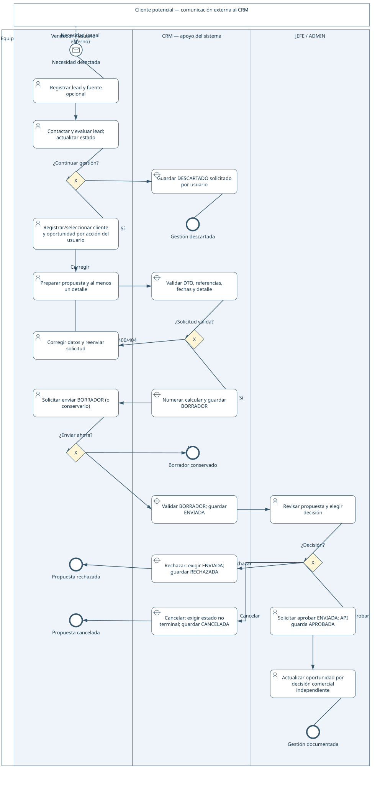
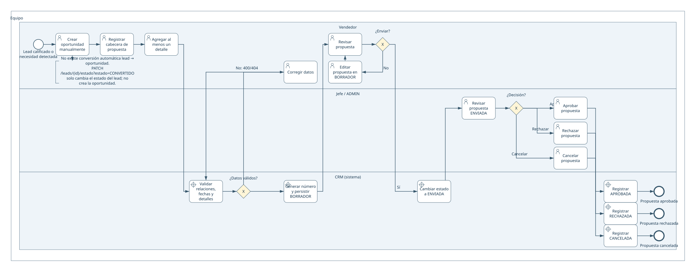

VIERNES CRM V1 · Evidencias académicas · 11/11/2026
Encargo docente ↔ implementación comprobada en E:\Viernes\Viernes
06. BPMN
TO-BE analítico fundamentado en capacidades del código. No es una ejecución de un motor BPMN, una observación del AS-IS ni una aprobación de usuarios. Los archivos son BPMN 2.0 XML con elementos semánticos y BPMNDI, no diagramas Mermaid rebautizados.
06.1 Proceso comercial TO-BE
La comunicación de una necesidad ocurre fuera del CRM (participante cliente potencial). El equipo comercial registra el lead, realiza contacto y calificación como trabajo humano, decide si continúa y registra o selecciona separadamente cliente y oportunidad. Marcar un lead CONVERTIDO no crea estos registros. Desde una oportunidad existente se prepara una propuesta, se valida y se conserva un borrador o se solicita su envío. JEFE/ADMIN puede aprobar, rechazar o cancelar según estado. El cierre de la oportunidad es una decisión posterior e independiente.
Los carriles expresan responsabilidad analítica, no una orquestación implementada. Las tareas de servicio muestran apoyo automático del backend invocado por una acción HTTP. “Enviar” solo actualiza ENVIADA: no está acreditado un canal de entrega por correo. El TO-BE propone un recorrido de trabajo; las etapas del lead/oportunidad no están impuestas por el servicio.
BPMN editable · SVG comercial

06.2 Detalle de propuestas reutilizado
Se conserva la estructura del BPMN anterior y se corrige manualTask por userTask: registrar una oportunidad en el sistema es una acción humana asistida por software. Se corrige el helper de construcción de detalle y las condiciones en flujos por defecto. El subproceso representa el camino habitual de revisión, no todos los endpoints: cancelar también se admite desde BORRADOR y la eliminación por ADMIN no se dibuja aquí. Errores 401/403, conflicto 409 o disponibilidad interrumpen la operación; no hay reintentos automáticos modelados.
BPMN editable · SVG de propuesta

06.3 Elementos BPMN y fundamento
| Elemento | Interpretación |
|---|
| Participantes | Cliente potencial (caja negra) y equipo/CRM (proceso). |
| Carriles | Vendedor/usuario, CRM y JEFE/ADMIN. No son servicios distribuidos. |
| Eventos | Inicio por necesidad externa y finales por descarte, borrador o resolución de propuesta. |
| Tareas de usuario | Decisiones y registros explícitos; no se asume conversión automática. |
| Tareas de servicio | Validación, cálculos y persistencia invocados por la aplicación. |
| Compuertas exclusivas | Continuar, validez de solicitud, enviar y decisión. Las ramas son opciones mutuamente excluyentes. |
| Flujo de mensaje | Necesidad del cliente por canal externo, no integración implementada. |
| Flujo de secuencia | Orden TO-BE dentro del participante equipo. |
viernes-backend/src/main/java/com/viernes/leads/application/service/LeadService.java:66
viernes-backend/src/main/java/com/viernes/oportunidades/application/service/OportunidadService.java:69
viernes-backend/src/main/java/com/viernes/propuestas/application/service/PropuestaService.java:118
viernes-backend/src/main/java/com/viernes/auth/keycloak/KeycloakSecurityConfig.java:127
06.4 AS-IS: exclusivamente plantilla de levantamiento
No existe evidencia suficiente para dibujar el proceso actual de la organización. Por ello no se presenta un AS-IS inventado ni se confunde el código con una observación operativa. El equipo debe completar la plantilla editable y adjuntar evidencia antes de diagramarlo.
| Tema | Información a aportar | Soporte |
|---|
| Inicio y final | ¿Qué hecho inicia el caso y cuándo se considera cerrado? | Caso real anonimizado y responsable |
| Participantes | ¿Quién registra, valida, aprueba, entrega y recibe? | Entrevistas y responsabilidades |
| Secuencia actual | ¿Qué pasos se realizan realmente, incluso fuera del CRM? | Observación y documentos utilizados |
| Canales | ¿Correo, llamada, Excel, papel o aplicación? | Ejemplos anonimizados |
| Decisiones | ¿Quién decide calificación, precio, aprobación y excepciones? | Regla vigente y autoridad |
| Lead y oportunidad | ¿Se transcriben datos? ¿Quién registra cada entidad? | Recorrido de un caso |
| Errores y retrabajo | ¿Qué se devuelve, corrige, cancela o reabre? | Incidencias y motivos |
| Tiempos y volumen | ¿Cuánto dura y cuántos casos se tramitan? | Muestra, período y método |
| Datos y privacidad | ¿Qué campos son imprescindibles y quién accede? | Formatos sin datos personales |
| Validación | ¿Quién revisó y aprobó el levantamiento y en qué fecha? | Acta o confirmación verificable |
Regla de cierre: identificar fuentes, contrastar variantes con los actores, separar hechos de propuestas y obtener revisión documentada. Solo entonces crear el BPMN AS-IS. La plantilla antigua con campos “completar” se mantiene en entrega_analisis_v2 como antecedente, no como evidencia de un proceso observado.